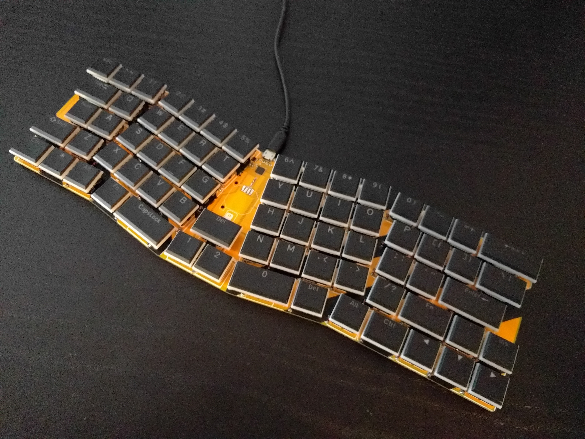

First Tests¶
Published on 2020-10-27 in Turbot Keyboard.
I have the switches, I assembled the keyboard and testing can now begin.
First of all, after about a month of using a Planck keyboard, this feels huge. I can no longer reach the backspace or esc keys without moving my hands, which is going to affect my touch-typing a bit, I suppose, unless I remap them to those extra keys in the middle, maybe?
The switches are great, the proportions of the keyboard are fine, and the layout seems to be working fine. All the keys are where I expect them. The right shift could be a bit bigger, but then there would be no room for the arrow keys.
I’m going to use this keyboard for a while now, and see how well it works for text, code, computer games and graphics programs.
I’m also uploading the design files and the ukeeb example for it, in case someone wants to try it themselves. The design files are updated, with nicer, less angular traces and with one missing connection for the center keys added.